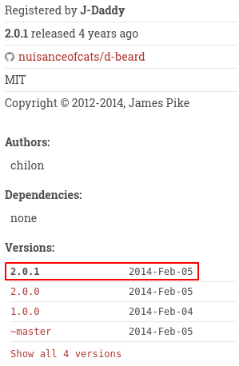

Breaking dependencies with Github account takeover
tl;dr
Getting started
Everybody seems to be talking about Github these days so I'll follow the trend. I don't want to talk about Microsoft though, so instead we'll explore Github account takeover.
The name is misleading, we won't hack anybody's account. Instead we'll take advantage of leftover redirections, digging old graves to reanimate dead projects and see where that leads us.
So let's go digging!

Github redirections
Github proposes a mechanism to help users change their usernames without breaking other projects altogether: redirections.
In summary Github maintains a redirection from your old account URL to your new one. When someone else claims the username and creates a project with the same name as the old one the redirection is disabled and the new project in place takes the lead. People are expected to use that to have more time changing their projects to the new URL.
Of course this assumption is flawed, nobody ever fixes what isn't broken and since this is done transparently by Github other projects don't get any kind of warning. After all, working transparently is the goal of this mechanism.
So, what kind of project would rely on Github URLs? Dependency systems.
Dub: D's package manager
We'll first have a look at Dub since it is where I first noticed the issue.
Dub's backend, https://code.dlang.org, essentially works by registering a repository through its Github URL (other providers are supported, but Github is the one we're interested in). It will then monitor the project for new tags or branches and recover zip archives of these landmarks automatically.
A project is then able to specify Dub dependencies in its dub.json file. While there are different way to specify a dependency's version, the most common allows following all minor updates but not major ones.
The risk is quite clear: if the user changes its Github name after having registered a project on Dub, then it is possible to create a new Github account and project with the old name and get Dub to use our code instead of the original one.

Listing, listing...
So, we'll start by enumerating all dead Github accounts that are still in used. I'm certain there are better ways to do this, but a bit of bash is easy enough to get the job done.
dead() {
curl -s "$1" \
| grep "blind github" \
| cut -d '"' -f 4 \
| cut -d '/' -f -4 \
| xargs curl -s \
| grep -q "^Not Found"
}
curl -s 'https://code.dlang.org/search?q=+' \
| tr '"' '\n' \
| grep packages \
| sed 's|^|https://code.dlang.org/|' \
| while read url ; do
if dead $url ; then
echo "$url"
fi
doneAnd sure enough we find 17 dead projects (list below). This may not sound like much but some of them touch cryptography or online payment and together they totalize about 500 downloads a month. Being able to inject a backdoor into 500 computers a month in a stealthy way isn't something I'd refuse as an attacker.
Here are the impacted projects found:
https://code.dlang.org/packages/moeimg-d
https://code.dlang.org/packages/stripe-d
https://code.dlang.org/packages/dzmq
https://code.dlang.org/packages/libhell
https://code.dlang.org/packages/post-rock
https://code.dlang.org/packages/derelict-newton
https://code.dlang.org/packages/d-beard
https://code.dlang.org/packages/libco
https://code.dlang.org/packages/dopenvg
https://code.dlang.org/packages/liblzma
https://code.dlang.org/packages/librados
https://code.dlang.org/packages/sass-vibe
https://code.dlang.org/packages/zeal
https://code.dlang.org/packages/elasticsearch-d
https://code.dlang.org/packages/dcrypto
https://code.dlang.org/packages/feature-test-d
https://code.dlang.org/packages/string-transform-dIf you perform the same test you should find a difference with the d-beard project which doesn't appear dead anymore. This is because I used it to check that the vulnerability was indeed exploitable. My apologies to the owner but since the project hasn't received any update in 4 years and I forked the original it shouldn't break anything.
Exploitation
As one would expect, exploitation is very easy. I just created a new account name "nuisanceofcats" (love the name by the way).

I then created a new project named d-beard. As indicated I didn't want to break anything so I forked the original, but I could very well have made a copy and add a backdoor to some functions.

All I had to do then was to add a new minor tag. We want a minor tag so that new projects automatically upgrade their dependency with our "backdoor". Of course my tag contained no modification to the code. On the screenshot the date is set in 2014 because it takes the date of the commit, not when it was tagged.
And that's it. Nice, easy, and quite hard to detect if the legitimate owner doesn't notice it himself since we obtained the account in a proper way and no code was broken.
Well, Go on then!
This is not restricted to Dub of course. Another language that had my attention was Go. While it doesn't have a package manager its import system natively supports importing libraries from Github repositories. This is very interesting in our case.
The lack of Go repository complicates the task of listing vulnerable repositories. Furthermore I must say that I don't know the language well so I'm not very familiar with its customs and whether there are recommended places listing projects.
I decided to look at the list of open-source projects in the wiki, but with only about 1200 elements it amounts to 0.5% of all Go projects on Github. Still, I found 17 impacted projects. I also had a look at the awesome-go which brought 5 more projects (last in the list below).
https://github.com/ArtemTitoulenko/GoForth
https://github.com/brettweavnet/gosync
https://github.com/colegion/goal
https://github.com/earthboundkid/shuffle
https://github.com/fzzy/sockjs-go
https://github.com/hecticjeff/procfile
https://github.com/joshlf13/gopack
https://github.com/jthestupidkid/wst
https://github.com/julian-gutierrez-o/rsync
https://github.com/mstap/godebiancontrol
https://github.com/purex01/netsnail
https://github.com/stretchrcom/goweb
https://github.com/stretchrcom/testify
https://github.com/th4t/vboxgo
https://github.com/thinkofdeath/steven
https://github.com/tockins/realize
https://github.com/ziuchkovski/writ
https://github.com/aurelien-rainone/go-rquad
https://github.com/dietsche/textbelt
https://github.com/go-rtc/stun
https://github.com/PromonLogicalis/asn1
https://github.com/tockins/realizeI have no statistics, but judging by the number of stars those projects get together far more than 500 downloads a day.
I won't redo the attack, you get the idea by now. It is even more worrisome though as at least with Dub we were able to quickly find an exhaustive list (at a given time, of course things can change fast), but with Go all projects are potentially impacted with no easy way to test for legitimacy.

There's mAUR
No let's have a look at Archlinux's semi-official package system: AUR.
AUR is a collection of installation scripts named PKGBUILD. They allow installing things easily even though they are not precompiled in the official repositories.
It is very often made clear that the security of AUR packages is the responsibility of the user (which by the way is utterly stupid; not that I don't understand the intent but no security system ever worked when leaving it to the user). This is why what we're discussing here much likely won't be considered an AUR vulnerability even though the user has pretty much no way to check the packages.
What we're interested in are git packages. Normally with AUR you would specify the source of what you're installing and a set of checksums to make sure you effectively downloaded the right package. Some package follow the master branch though, so as they can't know the checksum in advance they skip it and no checksum verification is performed. Those packages are by convention specified with a "-git" extension.
Of course that means we might be able to take some over. And by some I mean about 84 by my latest count. I won't burden you with the list, it's here.
84 is much lower than what I had imagined but it's still a good catch. I fear my approach wasn't that good on that one so I must have missed some. Here's the dirty script if anyone cares to do better:
pkgurl="https://aur.archlinux.org/cgit/aur.git/plain/PKGBUILD?h"
for i in {0..48} ; do
curl -i -s -k -X 'GET' \
"https://aur.archlinux.org/packages/?O=$((i*250))" \
"&SeB=nd&K=-git&outdated=&SB=n&SO=a&PP=1000&do_Search=Go"
done \
| grep "/packages/[^?]" \
| cut -d '"' -f 2 \
| sed -n "s|^/packages/\([^/]\+\)/|$pkgurl=\1|p" \
| xargs curl -s \
| sed -n "s|^.*source=.*\(github.com/[^$][^'\"]\+\)['\"].*|https://\1|p" \
| while read url ; do
if echo "$url" | cut -d / -f -4 | xargs curl -s | grep -q "^Not Found" ; then
echo "$url"
fi
doneIt should be noted that even though the packages follow master, no update usually happen until someone updates the AUR package. This means we get to inject our malicious commit into new user's packages but not old ones until there is an update. Or unless he uses a handy AUR helper such as yay which follows git updates on its own. Don't get me wrong, yay is a good software, but it does expose users even more in that specific case.

What to do
- If you are a developer:
Please, do the responsible thing and don't let your projects behind. This jeopardizes your users. Go back and change the places where your projects are registered. Notify your users.
- If you are a user:
Always question the code you are importing. Just because it is sane at one point in time doesn't mean it'll still be when you reuse it. The developer may be wicked, hacked or undead projects may raise from their tomb again to haunt you.
I published the lists of impacted projects so that you know they exist. If you are using one of them and it has come back from the dead you know something is going on. It should either remain dead or change URL completely to the new repository.
- If you manage a project like Dub or Go:
Please don't rely on Github URLs. These are not meant to be stable. If you do and are aware of undead projects update the redirections as soon as possible.
- If you are Github:
Thanks for reading me. Can you go back to breaking repositories with renames instead of opening vulnerabilities everywhere else please? At the very least there should be some bells and whistles when someone overwrites a redirection so that the owner can tell that something fishy is going on.
Conclusion
The story doesn't end here. Many other projects rely on Github URLs, and I am pretty sure that it will be attacked if it's not already the case.
And this is not a new attack, a very common way to use Github account takeovers is using Github pages. If you redirect one of your subdomain to an abandoned Github page anyone can create the corresponding account and obtain a subdomain of your website. This opens the door to many things from phishing to data disclosure.
What really frightens me is how difficult such an attack is to detect. Since the attacker is the legitimate owner of the repository there is no way to link it back to its previous owner, especially if the account is well copied. The only possibility I see is for the owner to find that fake account, but why would he ever check for such things?